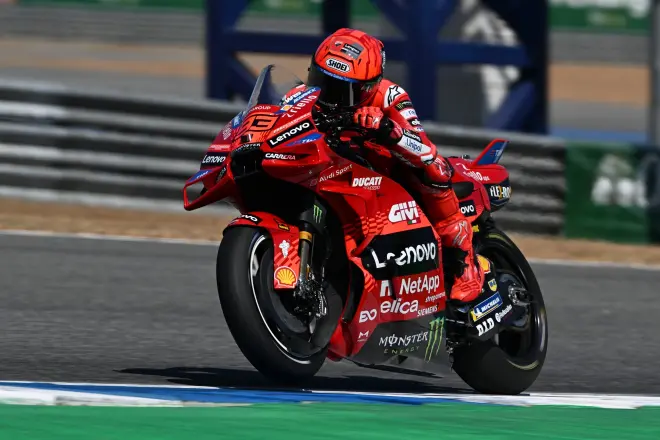

Marc Márquez impresiona en el test de Buriram

Motor: Marc Márquez y Ducati, conservar para ganar.
Reacciones: Marc Márquez: "Álex es la mayor sorpresa de la pretemporada".
Día 1: Marc Márquez se exhibe en el test de Buriram.
Los equipos de MotoGP apuraron hasta el final en el último día de entrenamientos de la pretemporada 2025, en el test de Buriram (Tailandia). Las grandes decisiones ya están tomadas y en la jornada de hoy se trataba de realizar algún intento de vuelta rápida y de hacer tandas largas para ver el ritmo de carrera.
Así, en la primera hora, nada más comenzar y aprovechando que el calor no era extremo, varios se lanzaron a buscar un buen tiempo. El que mejor lo hizo fue Pedro Acosta, que bajó el registro de Marc Márquez del primer día. El murciano hizo 1:29.133 frente al 1:29.184 del ilerdense. Era la constatación de que KTM va mejor en la pista tailandesa y que El Tiburón de Mazarrón es la referencia de su fábrica. Por detrás, estaría Brad Binder, que suele ir a fogonazos, Maverick Viñales, que progresa, aunque ligeramente en su adaptación, y Bastianini, que admitió estar perdido. "Debo resetearme y olvidarme de mis cuatro años en Ducati", admitía ayer La Bestia.